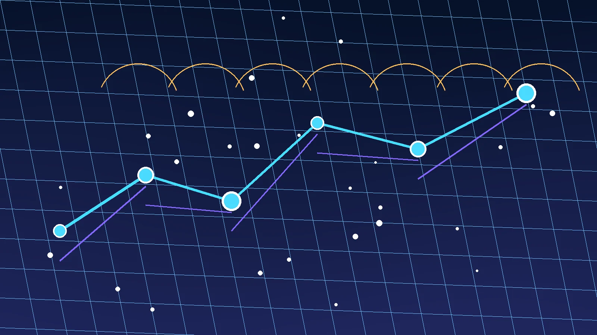
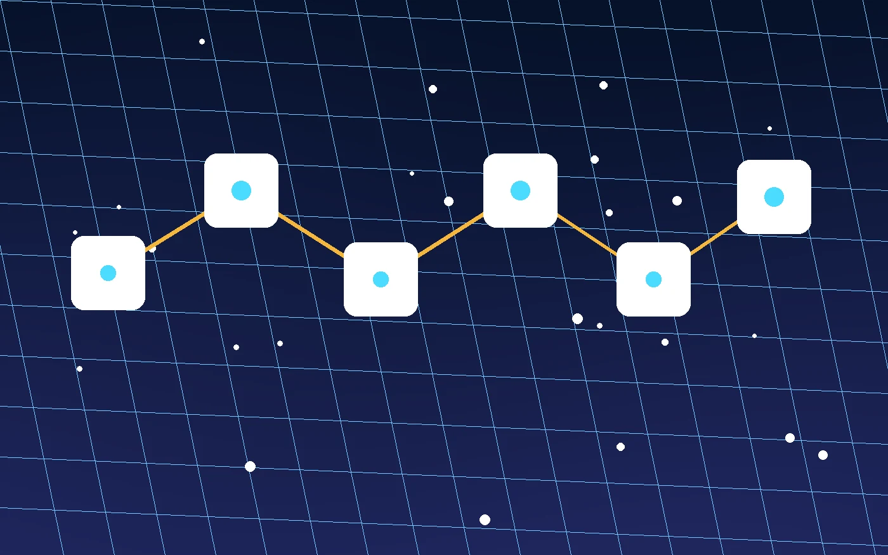
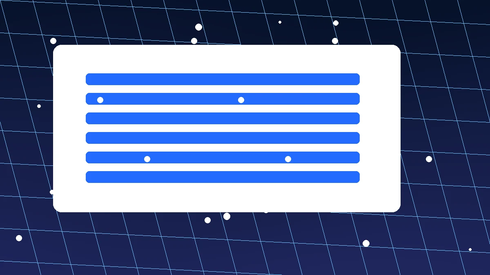

编辑短评
连接工具在日常网络中的实际作用
加速器更像一层连接路径管理。它把设备、本地网络和可用节点串起来，遇到弱网、跨网络访问或远程协作时，给你一个更清楚的状态窗口。
智连全球 · 连接状态观察
把线路、节点和设备状态放在同一个视角里看，日常办公、资料访问和移动网络切换时更容易判断问题来源。
这组加速器内容不只放下载入口，也把网络连接工具的使用过程、版本获取和常见故障排查拆开说明。

编辑短评
加速器更像一层连接路径管理。它把设备、本地网络和可用节点串起来，遇到弱网、跨网络访问或远程协作时，给你一个更清楚的状态窗口。
判断方式
一次测速只能说明当下瞬间。线路距离、节点响应、设备权限和当前网络入口一起变化，观察几分钟的趋势，通常比反复点击切换更可靠。
连接路线图
线路并不是一条固定直线。使用加速器时，家庭宽带、移动网络、节点负载和设备状态都会改变连接路径。

距离较近通常响应更快，但也要看拥塞和入口网络。
Wi-Fi、宽带和移动流量会给同一节点带来不同反馈。
负载升高时，稳定线路可能比短时低延迟更合适。
权限、后台限制和系统代理都会影响连接建立。
连续异常再切换，通常比看到一次波动就换更稳。
设备矩阵
同一款加速器在移动端更容易遇到网络切换和后台权限，桌面端则常见代理、休眠和长时间运行判断。家庭宽带与移动网络的入口不同，排查顺序也应不同。
查看完整设备适配说明| 设备 | 常见状态 | 先检查什么 |
|---|---|---|
| 安卓手机 | 后台限制、移动网络切换 | 权限与省电模式 |
| iPhone | 系统 VPN 配置刷新 | 连接授权与网络入口 |
| Windows电脑 | 代理、休眠、后台任务 | 系统网络与切换记录 |
| macOS设备 | 权限弹窗、钥匙串确认 | 系统设置与客户端状态 |
| 平板 | 热点和 Wi-Fi 来回切换 | 当前入口与节点匹配 |
| 家庭宽带与移动网络 | 入口路径差异明显 | 信号、路由器和基站变化 |
性能观察台
加速器的性能观察不需要伪造实时数据。看当前连接状态、延迟变化趋势、节点响应、切换记录和故障提示，就能判断下一步该做什么。


原理时间线
场景实测区

先看会议、远程桌面和协作工具是否连续响应。
关注加载完整性，别只盯瞬时延迟。
手机、平板和电脑入口不同，状态要分开判断。
基站和信号变化会让连接短暂重建。
先排除本地入口，再比较节点响应。
看切换记录、系统占用和故障提示是否稳定。

隐私安全
页面本身是静态内容，不设置账号系统。涉及加速器下载跳转时，页面会明确标注中转，不把 Base64 描述成加密能力。

轻量更新
加速器更新不追求花哨提示，重点是设备匹配、安装前检查和首次打开后的状态确认。
从路由稳定性、无线环境、运营商路径和设备切换角度，看两类网络下线路表现的差别。
 连接笔记
连接笔记
节点延迟会随网络入口和负载变化，观察连接状态、响应趋势和切换记录比盯单个数值更可靠。

连接笔记桌面端长时间运行时，可从连接状态、资源占用、切换记录和应用响应判断是否需要处理。
 连接笔记
连接笔记
手机网络切换后，需重新确认连接状态、节点匹配、系统权限和应用后台限制，避免误判线路问题。
 连接笔记
连接笔记
远程办公更看重连续连接、会议响应、资料访问和多设备切换，稳定性判断应细到每个任务。
 连接笔记
连接笔记
版本更新前后可记录常用节点、系统权限和连接历史，安装后按步骤检查，减少配置丢失带来的困扰。
FAQ
一般不需要。若应用本身检测到网络出口变化，可能要求重新验证，这属于应用侧的安全策略。
不一定。单次测速只能说明当时的响应，长时间波动、丢包提示和当前网络质量也要一起看。
先看连接状态是否重建，再检查节点是否仍适合当前网络；必要时手动切换线路。
正常运行时占用应保持平稳。若发现异常耗电或连接反复断开，可以先重启客户端并查看故障提示。
不能。它处理的是连接路径与节点匹配，路由器故障、运营商中断或应用账号问题仍需单独排查。
如果设备里有自定义线路、常用节点或特殊代理设置，更新前记录一下更稳妥。
无线信号、基站切换、路由拥塞都会影响链路，客户端会根据状态尝试重新建立连接。